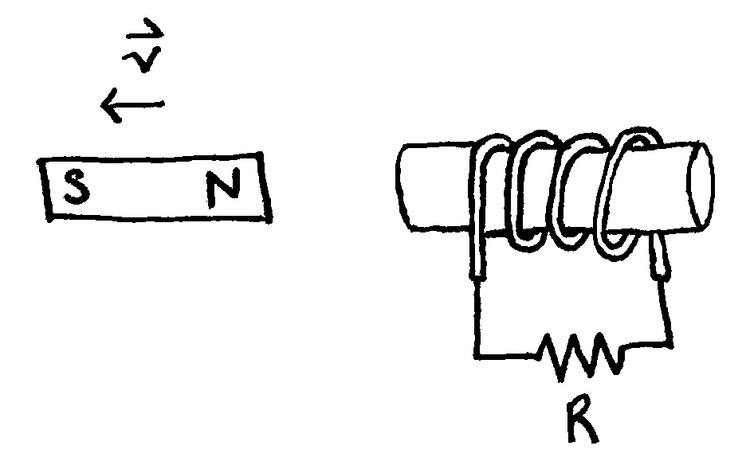
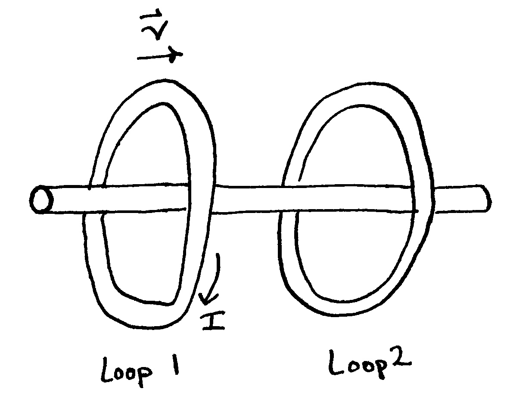
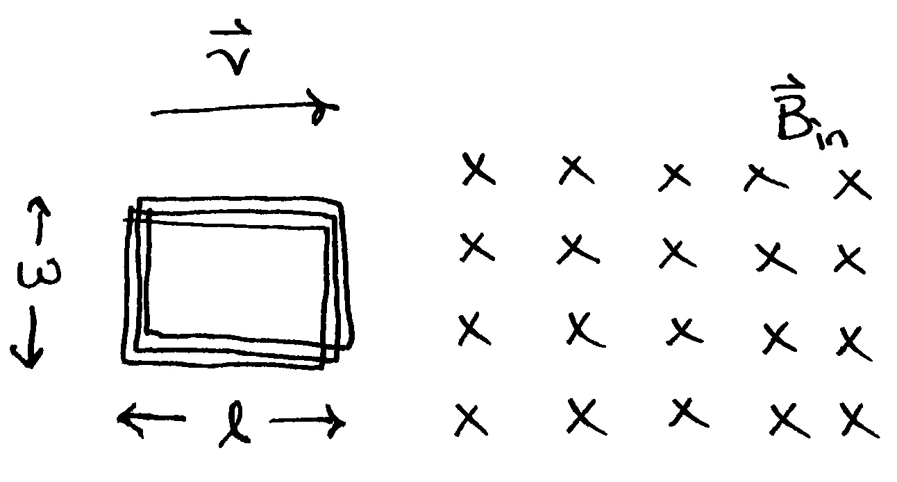

Phy112 HW2.2 - Induction
Problem 2.2.1
A bar magnet is positioned near a coil of wire, as shown in the below figure. What is the direction of the current in the resistor when the magnet is moved
- to the left?
- to the right?

Problem 2.2.2
Two circular loops of wire surround an insulating rod as shown below. Loop 1 carries a current \(I\) in the clockwise direction when viewed from the left end. If loop 1 moves toward loop 2, which remains stationary, what is the direction of the induced current in loop 2 when viewed from the left end?

Problem 2.2.3
Consider the arrangement shown in the below figure. Assume \(R=6.00~\Omega\), \(\ell = 1.20~m\) and a uniform \(2.50~T\) magnetic field is directed into the page. At what speed should the bar be moved to produce a current of \(0.500~A\) in the resistor?

Problem 2.2.4
A wire loop of radius \(0.30~m\) lies so that an external magnetic field of magnitude \(0.30~T\) is perpendicular to the loop. The field reverses its direction and its magnitude changes to \(0.20~T\) in \(1.5~s\). Find the magnitude of the average induced emf in the loop during this time.
Problem 2.2.5
A rectangular coil with resistance \(R\) has \(N\) turns, each of length \(\ell\) and width \(w\), as shown below. The coil moves into a uniform magnetic field \(\vec{B}_{in}\) with constant velocity \(\vec{v}\). What are the magnitude and direction of the total magnetic force on the coil
- as it enters the magnetic field?
- as it moves within the field?
- as it leaves the field?

Problem 2.2.6
A solenoid of radius \(2.5~cm\) has \(400\) turns and a length of \(20~cm\).
- Find its inductance.
- find the rate at which current must change through it to produce an emf \(\mathcal{E}\) of \(75~mV\).
Problem 2.2.7
A \(25~mH\) inductor, an \(8.0~\Omega\) resistor, and a \(6.0~V\) battery are connected in series. The switch is closed at \(t=0\).
Find the voltage drop across the resistor
- at \(t=0\).
- after one time constant has passed.
Find the voltage drop across the inductor
- at \(t=0\).
- after one time constant has passed.
Problem 2.2.8
an AC power generator produces \(50~A\) (rms) at \(3600~V\). The voltage is stepped up to \(100000~V\) by an ideal transformer and the energy is transmitted through a long distance power line that has a resistance of \(100~\Omega\). What percentage of the power delivered by the generator is dissipated as heat in the power line?